Chapter 22 Model diagnostics
22.1 Introduction
We usually have an analysis in mind when we design an experiment or observational data collection protocol. It may be tempting to jump straight into this analysis without carefully examining the data first. This is never a good idea. In the few chapters we have repeatedly emphasised that careful data analysis always begins with inspection of the data. Visualising a dataset helps us to understand the data and and evaluate whether or not the assumptions of a statistical tool are likely to be violated.
22.1.1 Understanding data
We’ve been using ‘well-behaved’ data sets in this book so far, which tends to give the impression that visual inspections of the data are not all that necessary. Here’s an example of why it matters. Imagine we are interested in quantifying the relationship between two variables, called \(x\) and \(y\). We might be tempted to carry out a linear regression analysis without first inspecting these data to get straight to ‘the answer’: the coefficients of the linear regression model. This could be very misleading. Take a look at these four scatter plots:
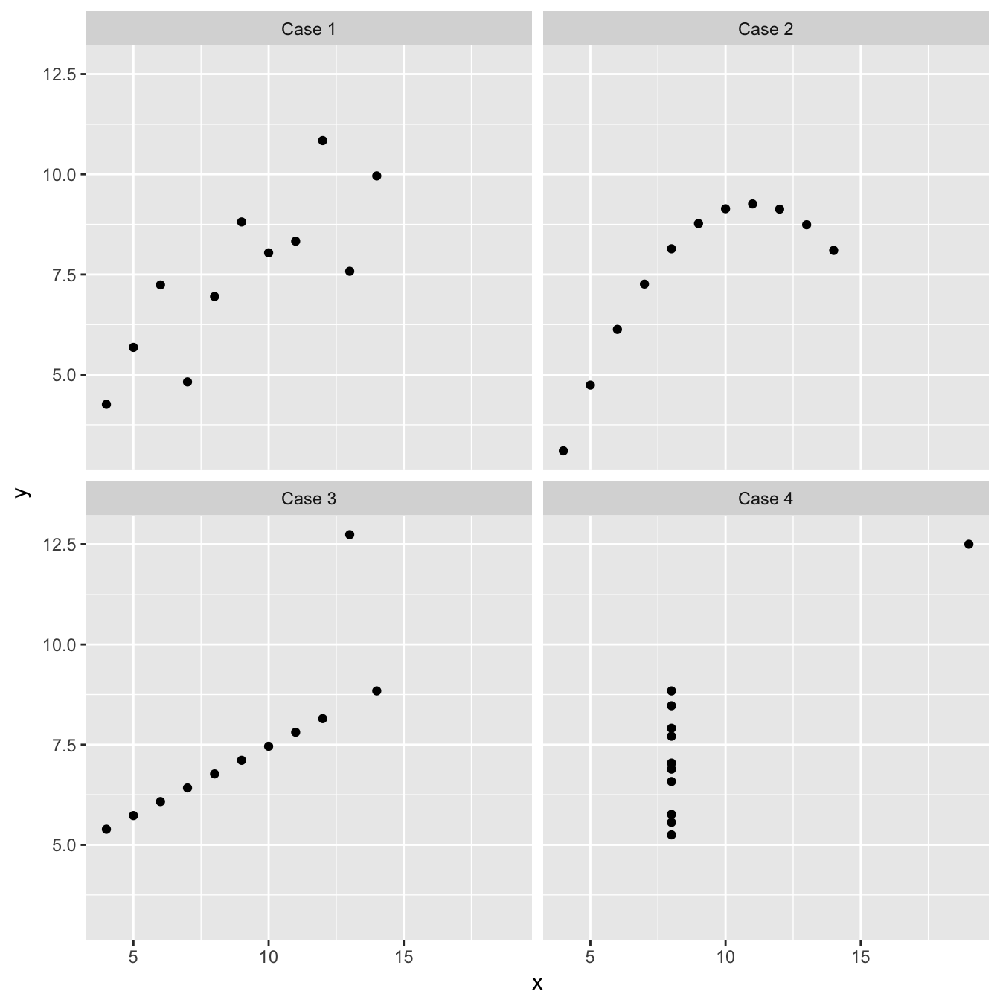
These four artificial data sets were constructed by the statistician Francis Anscombe. The means and variances of \(x\) and \(y\) are nearly identical in all four data sets, and what’s more, the intercepts and slopes of the best fit regression lines are almost identical (the intercept and slope are 3.00 and 0.500, respectively). The nature of the relationship between \(x\) and \(y\) is quite obviously different among the four cases:
“Case 1” two linearly related, normally distributed variables. This is the kind of data we often hope for in a statistical analysis.
“Case 2” shows two variables that are not normally distributed, but there is a perfect non-linear relationship between the tw.
“Case 3” shows an example the variables are perfectly linearly associated for all but one observation which ruins the perfect relationship.
“Case 4” shows an example where a single outlier generates an apparent relationship where the two variables are otherwise unrelated.
Each of these plots tells a different story about the relationship between \(x\) and \(y\), yet the linear regression model says the same thing is happening in each case. These are obviously somewhat pathological examples, but they clearly illustrate the kinds of issues that can, and do, arise with real data. There is a real risk we will apply an inappropriate analysis if we fail to detect these kinds of problems.
22.1.2 Checking assumptions
Every statistical model makes certain assumptions about the data38. Even if a dataset doesn’t exhibit the very obvious problems seen in the Anscombe examples, we still need to assess whether the assumptions of the statistical model we want to use are likely to be valid. We always check these assumptions each time we introduced a new model or test.
For example, when working with a linear regression models, we started with a scatter plot of the dependent variable vs. the independent variable. This allowed us to assess whether the two variables are linearly related, and to see whether the variability of the residuals in constant. We then plotted the residuals from the fitted regresssion model to evaluate the normality assumption.
These kinds of ad hoc approaches are useful, but they can be often be difficult to apply at times. For example, if we only have a small sample it is difficult to evaluate the normality assumption of a regression using a dot plot or histogram. Similarly, a scatter plot may hide subtle non-linearities in the relationship between two variables.
These limitations can be addressed by moving away from plots of raw data and residuals. It is much better to rely on a set of graphical tools called regression diagnostics. Instead of using just the raw data, regression diagnostics use properties of the fitted model to understand how well the model fits the data and evaluate the model assumptions. This chapter is about how to generate and interpret three basic regression diagnostic plots. We’ll learn about these tools in the contect of regression, though they can be used with any statistical model produced by the lm function.
22.2 Diagnostics for simple linear regression
Before examining some diagnostic plots for linear regression, we should review the underlying assumptions:
Independence. The residuals must be independent.
Measurement scale. The dependent \(y\) variable is measured on an interval or ratio scale.
Measurement error. The values of the independent \(x\) variable are determined with negligible error.
Linearity The relationship between the \(x\) and \(y\) variable is linear.
Normality. The residuals are drawn from a normal distribution.
Constant variance. The variance of the residuals is constant.
Assumptions 1 (independence), 2 (measurement scale) and 3 (measurement error) are features of the experimental design and the data collection protocol. They generally can not be explicitly checked by looking at the data or by producing regression diagnostics. This leaves assumptions 4 (linearity), 5 (normality) and 6 (constant variance). There is a specific diagnostic plot for each of these.
We’ll work with a specific example to learn how these diagnostics work…
Walk through example
You should work through the example in the next few sections.
22.2.1 A simple linear regression example
A survey was carried out to establish whether the abundance of hedgerows in agricultural land had an effect on the abundance of grey partridge. From an area of agricultural land covering several farms, 40 plots were selected which had land uses as similar as possible, but differed in the density of hedgerows (km hedgerow per km2). Plots were selected to cover a wide range of hedgerow densities. The density of partridges was established by visiting all fields in a study plot once immediately after dawn and once just before dusk, when partridges are most likely to be seen. Counts of birds observed were made on each visit and the dawn and dusk data were averaged to give a value for partridge abundance for each study plot.
The data are stored in a CSV file PARTRIDG_BIGSTUDY.CSV (not PARTRIDG.CSV!). The density of hedgerows (km per km2) is in the Hedgerow variable and the density of partridges (no. per km) is in the Partridge variable. Read the data into R, calling it partridge.
22.2.2 Simple checks
We relied on simple plots of the raw data to evaluate the assumptions of regression in the last chapter. Let’s revise these evaluations first. We start by constructing a scatter plot of the data:
ggplot(partridge, aes(x = Hedgerow, y = Partridge)) +
geom_point() +
xlab("Hedgerow density (km per km²)") + ylab("Partridge Count")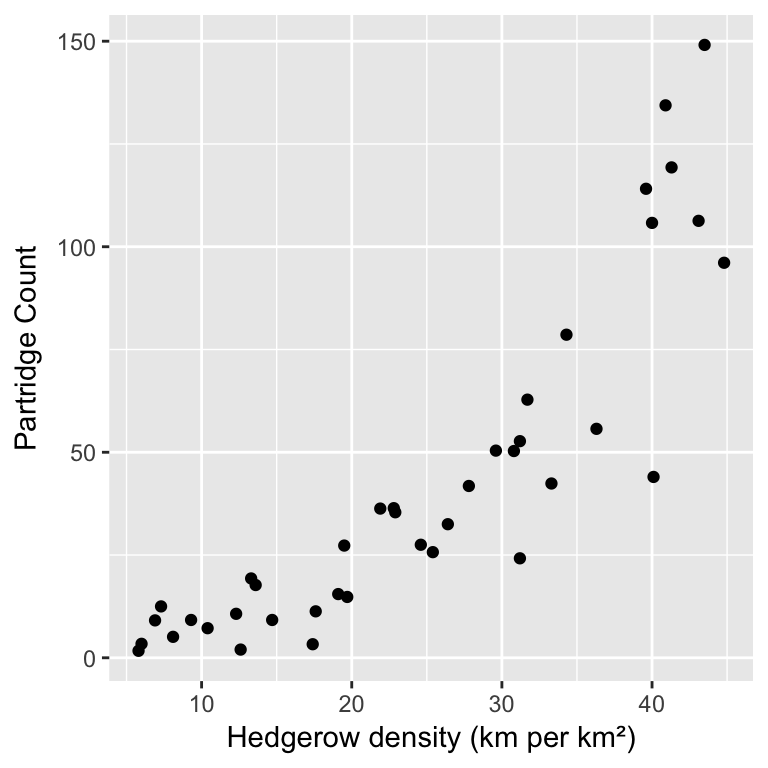
Spend some time looking at the scatter plot. Think about the linearity, normality and constant variance assumptions of linear regression. Do you think these data satisfy all three of these assumptions? If not, how is (are) the assumption(s) broken?
The linearity, normality and constant variance assumptions are features of: 1) the nature of the relationship between the dependent (Partridge) and independent (Hedgrow) variables, and 2) the scatter of the observations around this relationship. These are difficult to evaluate without at least having a sensible reference point: the line of best fit.
Let’s look at the data again, but this time include the line of best fit. We know how to do this—there are three steps. First, we have to fit the linear regression model to the data:
partridge_model <- lm(Partridge ~ Hedgerow, data = partridge)In the second step, we use the predict function with the fitted model object (partridge_model) to generate some predicted values of the dependent variable, over a range of values of the independent variable:
pred.data <-
data.frame(Hedgerow = 5:45) %>%
mutate(Partridge = predict(partridge_model, newdata = .))The final step uses ggplot2 to plot the data and add the predictions:
ggplot(pred.data, aes(x = Hedgerow, y = Partridge)) +
geom_line(colour = "steelblue") +
geom_point(data = partridge) + # remember: use the raw data here
xlab("Hedgerow density (km per km²)") + ylab("Partridge Count") It is somewhat easier to evaluate the assumptions now that we have added the line of best fit.
It is somewhat easier to evaluate the assumptions now that we have added the line of best fit.
Spend some time looking at the new scatter plot. Think again about the linearity, normality and constant variance assumptions of linear regression. Does including the line of best fit make it easier to assess these assumptions? If your answer is yes, which of the assumption(s) is (are) easier to evaluate now?
The second kind of assessment we used is based on the distribution of the residuals from a fitted model. Each observation has one residual associated with it—this is the vertical distance between the relevant value of a partridge density observation and the fitted line. We use the resid function to extract the residuals from a fitted model object:
resid(partridge_model)## 1 2 3 4 5 6 7 8 9 10
## 13.30 14.42 17.51 19.74 10.02 10.63 5.44 3.41 -6.16 9.11
## 11 12 13 14 15 16 17 18 19 20
## 6.64 -5.06 -18.81 -11.39 -11.55 -0.91 -13.99 1.12 -1.40 -2.69
## 21 22 23 24 25 26 27 28 29 30
## -15.53 -19.65 -15.76 -10.53 -7.16 -10.75 -38.01 -9.51 -0.86 -25.91
## 31 32 33 34 35 36 37 38 39 40
## 7.38 -21.33 27.48 18.02 -44.07 44.00 27.74 9.51 51.15 -5.63Staring at a long list of residuals is not really all that useful. Instead, we need to summarise their distribution, using either a dot plot or a histogram. We have to place them into a data frame first to use ggplot:
# step 1 -- place the residuals in a data frame
plt_data <- data.frame(residuals = resid(partridge_model))
# step 2 -- make a dot plot
ggplot(plt_data, aes(x = residuals)) + geom_dotplot(binwidth = 5)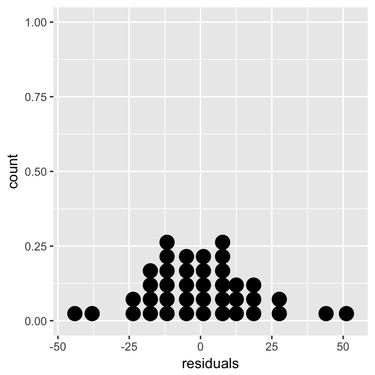
Which assumption of linear regression—linearity, normality or constant variance—does this histogram allow you to evaluate? Does it look like the assumption has been violated?
That’s enough revision. Now it’s time to turn to the regression diagnostics.
22.2.3 Fitted values
In order to understand regression diagnostics we have to know what a fitted value is. The phrase ‘fitted value’ is just another expression for ‘predicted value’. Look at the plot below: 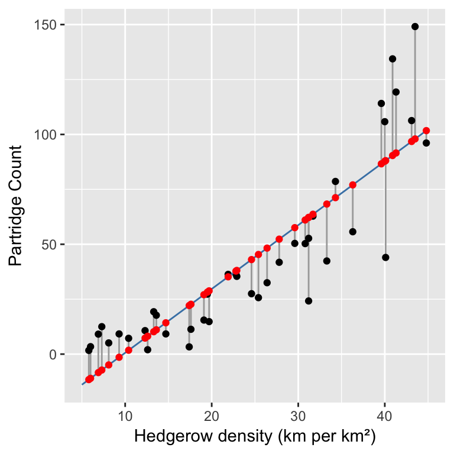 This shows the raw data (black points), the line of best fit (blue line), the residuals (the vertical grey lines), and the fitted values (red points). We find the fitted values by drawing a vertical line from each observation to the line of best fit. The values of the dependent variable (Partridge in this case) at the point where these touch the line of best fit are the ‘fitted values’. This means the fitted values are just predictions from the statistical model, generated for each value of the independent variable. We can use the fitted function to extract these from a fitted model:
fitted(partridge_model)## 1 2 3 4 5 6 7 8 9 10 11 12
## -11.6 -11.0 -8.4 -7.2 -4.9 -1.4 1.8 7.3 8.2 10.2 11.1 14.3
## 13 14 15 16 17 18 19 20 21 22 23 24
## 22.1 22.7 27.0 28.2 28.8 35.2 37.8 38.1 43.0 45.4 48.3 52.3
## 25 26 27 28 29 30 31 32 33 34 35 36
## 57.6 61.0 62.2 62.2 63.7 68.3 71.2 77.0 86.6 87.8 88.1 90.4
## 37 38 39 40
## 91.6 96.8 98.0 101.7Notice that some of the fitted values are below zero. Why do we see negative fitted values? This doesn’t make much sense biologically (negative partridges?). Do you think it is a problem?
22.2.4 Checking the linearity assumption
The linearity assumption states that the general relationship between the dependent and independent variable should look like a straight line. We can evaluate this assumption by constructing a residuals vs. fitted values plot. This is a two-step process. First use the fitted and resid functions to construct a data frame containing the fitted values and residuals from the model:
plt_data <-
data.frame(Fitted = fitted(partridge_model),
Resids = resid(partridge_model))We called the data frame plt_data. Once we have made this data frame, we use ggplot2 to plot the residuals against the fitted values:
ggplot(plt_data, aes(x = Fitted, y = Resids)) +
geom_point() +
xlab("Fitted values") + ylab("Residuals")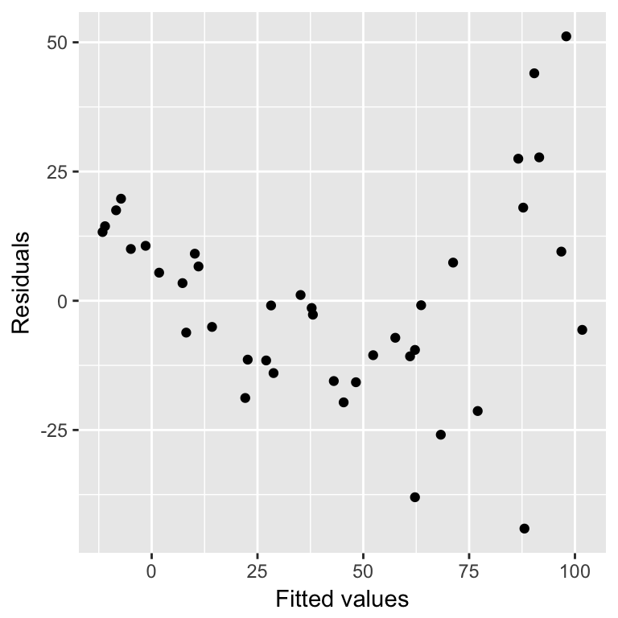 What does this plot tell us? It indicates that the residuals tend to be positive at the largest and smallest fitted values, and that they are generally negative in the middle of the range. This U-shaped pattern is indicative of a problem with our model. It tells us that there is some kind of pattern in the association between the two variables that is not being accommodated by the linear regression model we fitted to the data. The U-shape indicates that the relationship is non-linear, and that it ‘curves upward’.
We can see where this pattern comes from when we look at the raw data and fitted model again: 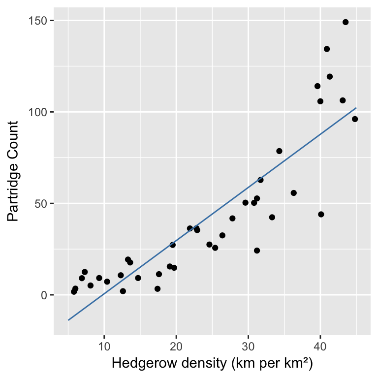 There is obviously some curvature in the relationship between partridge counts and hedgerow density, yet we fitted a straight line through the data. The U-shape in the residuals vs. fitted value plot comes from the fact that the relationship between the dependent and independent variables is ‘accelerating’ (also called ‘convex’).
What other kinds of patterns might we see residuals vs. fitted value plot? Two are particularly common: U-shapes (the one we just saw) and hump-shapes. Look at the two artificial data sets below… 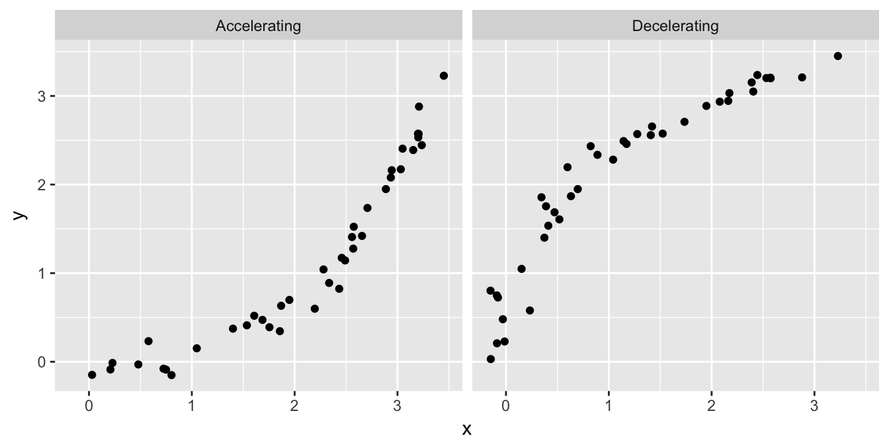 The data labelled ‘Accelerating’ is similar to the partridge data: it exhibits a curved, accelerating relationship between the dependent variable and the independent variable. The data labelled ‘Decelerating’ shows a different kind of relationship: there is a curved, decelerating relationship between the two variables. We can fit a linear model to each of these data sets, and then visualise the corresponding residuals vs. fitted value plots: 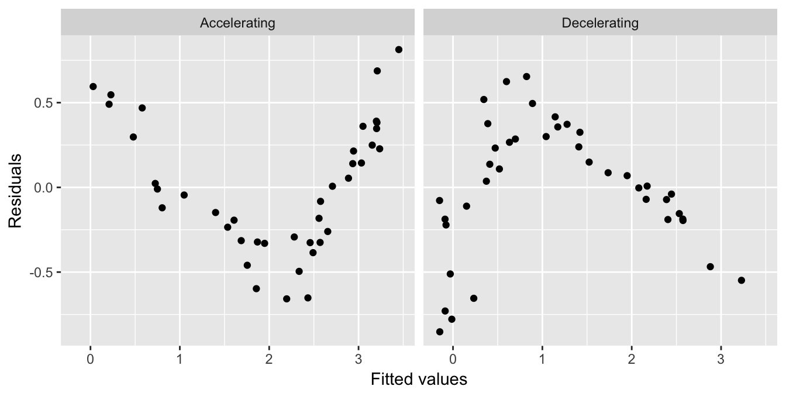 Here we see the characteristic U-shape and hump-shape pattern we mentioned above. The U-shape occurs when there is an accelerating relationship between the dependent variable and the independent variable. The hump-shape occurs when there is an decelerating relationship between the dependent variable and the independent variable.
By this point something may be bothering you. This seems like a lot of extra work to evaluate an aspect of the model that we can assess by just plotting the raw data. This is true when we are working with a simple linear regression model. However, it can much harder to evaluate the linearity assumption when working with more complicated models where there is more than one independent variable39. In these situations, a residuals vs. fitted values plot gives us a powerful way to evaluate whether or not the assumption of a linear relationship is reasonable.
That’s enough about the residuals vs. fitted values plot. Let’s move on to the normality evaluation…
22.2.5 Checking the normality assumption
How should we evaluate the normality assumption of linear regression? That is, how do we assess whether or not the residuals are drawn from a normal distribution? We know how to extract the residuals from a model and plot their distribution, but there is a more powerful graphical technique to available to us: the normal probability plot.
The normal probability plot is used to identify departures from normality. If we know what we are looking for, we can identify many different kinds of problems, but to keep life simple we will focus on the most common type of assessment: determining whether or not the distribution of residuals is excessively skewed. Remember the concept of distributional skew? A skewed distribution is just one that is not symmetric. For example, the first distribution below is skewed to the left (‘negative skew’), the second is skewed to the right (‘positive skew’), and the third is symmetric (‘zero skew’): 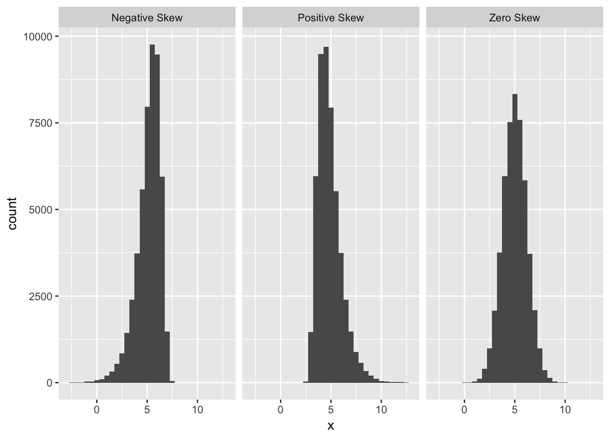
The skewness in the first two distributions is easy to spot because they contain a lot of data and the skewness is quite pronounced. A normal probability plot allows us to pick up potential problems when we are not so lucky. The methodology underlying construction of a normal probability plot is quite technical, so we will only try to give a flavour of it here. Don’t worry if the next segment is confusing—interpreting a normal probability plot is much easier than making one.
We’ll work with the partridge example again. We start by extracting the residuals from the fitted model into a vector, using the resids function, and then standardise these by dividing them by their standard deviation:
mod_resids <- resid(partridge_model)
mod_resids <- mod_resids / sd(mod_resids)The standardisation step is not essential, but dividing the raw residuals by their standard deviation ensures that the standard deviation of the new residuals is equal to 1. Standardising the residuals like this makes it a little easier to compare more than one normal probability plot. We call these new residuals the ‘standardised residuals’.
The next step is to find the rank order of each residual. That is, we sort the data from lowest to highest, and find the position of each case in the sequence (this is its ‘rank’). The function order can does this:
resid_order <- order(mod_resids)
resid_order## [1] 35 27 30 32 22 13 23 21 17 15 14 26 24 28 25 9 40 12 20 19 16 29 18
## [24] 8 7 11 31 10 38 5 6 1 2 3 34 4 33 37 36 39This tells us that the first residual is the 35th largest, the second is the 27th largest, the third is the 30th largest, and so on.
The last step is the tricky one. Once we have established the rank order of the residuals, we ask the following question: if the residuals really were drawn from a normal distribution, what is their most likely value, based on their rank? We can’t really explain how to do this without delving into the mathematics of distributions, so this will have to be a ‘trust us’ situation. As usual, R can do this for us, and we don’t even need the ranks—we just calculated them to help us explain what happens when we build a normal probability plot. The function we need is called qqnorm:
all_resids <- qqnorm(mod_resids, plot.it = FALSE)
all_resids <- as.data.frame(all_resids)The qqnorm doesn’t produce a data frame by default, so we had to covert the result using a function called as.data.frame. This extra little step isn’t really all that important.
The all_resids object is now a data frame with two variables: x contains the theoretical values of normally distributed residuals, based on the rank orders of the residuals from the model, and y contains the actual standardised residuals. Here are the first 10 values:
head(all_resids, 10)## x y
## 1 0.7977768 0.6855052
## 2 0.8871466 0.7431596
## 3 0.9842350 0.9021176
## 4 1.2133396 1.0174265
## 5 0.6356570 0.5162945
## 6 0.7143674 0.5478778
## 7 0.2858409 0.2800927
## 8 0.2211187 0.1759340
## 9 -0.2858409 -0.3173156
## 10 0.4887764 0.4693592Finally, we can plot these against one another to make a normal probability plot:
ggplot(all_resids, aes(x = x, y = y)) +
geom_point() + geom_abline(intercept = 0, slope = 1) +
xlab("Theoretical Value") + ylab("Standardised Residual")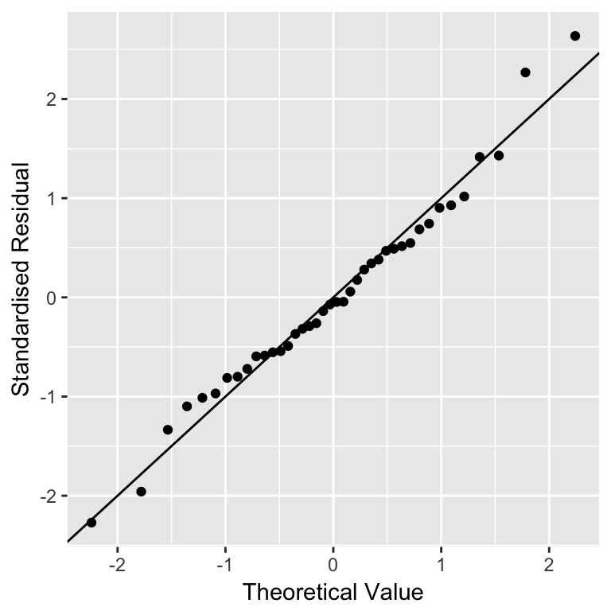 We used geom_abline(intercept = 0, slope = 1) to add the one-to-one (1:1) line. We haven’t used this function before and we won’t need it again. The one-to-one line is just a line with a slope of 1 and an intercept of 0—if an \(x\) value and \(y\) value are equal their corresponding point will lie on this line.
Don’t worry too much if those calculations seem opaque. We said at the beginning of this section that it’s not important to understand how a normal probability plot is constructed. It is important to know how to interpret one. The important feature to look out for is the positioning of the points relative to the 1:1 line. If the residuals really are drawn from a normal distribution they should generally match the theoretical values, i.e. the points should lie on the 1:1 line.
In the partridge example that is exactly what we see. A couple of the more extreme values diverge a little, but this isn’t something to worry about. We never expect to see a perfect 1:1 relationship in these kinds of plots. The vast majority of the points are very close to the 1:1 line though, which provides strong evidence that the residuals probably are sampled from a normal distribution.
What does a normal probability plot look like when residuals are not consistent with the normality assumption? Deviations from a straight line suggest departures from normality. How do right skew (‘positive skew’) and left skew (‘negative skew’) manifest themselves in a normal probability plot? Here is the normal probability plot produced using data from the left-skewed distribution above: 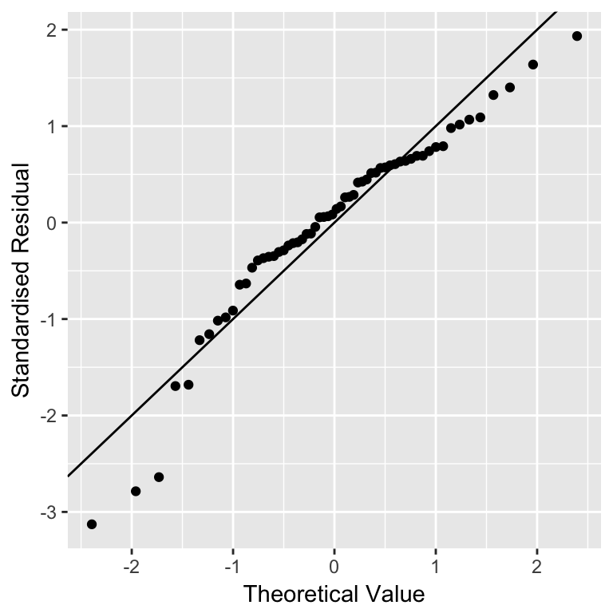 Rather than a straight line, we see a decelerating curved line. This is the signature of residuals that are non-normal, and left-skewed. We see the opposite sort of curvature when the residuals are right-skewed: 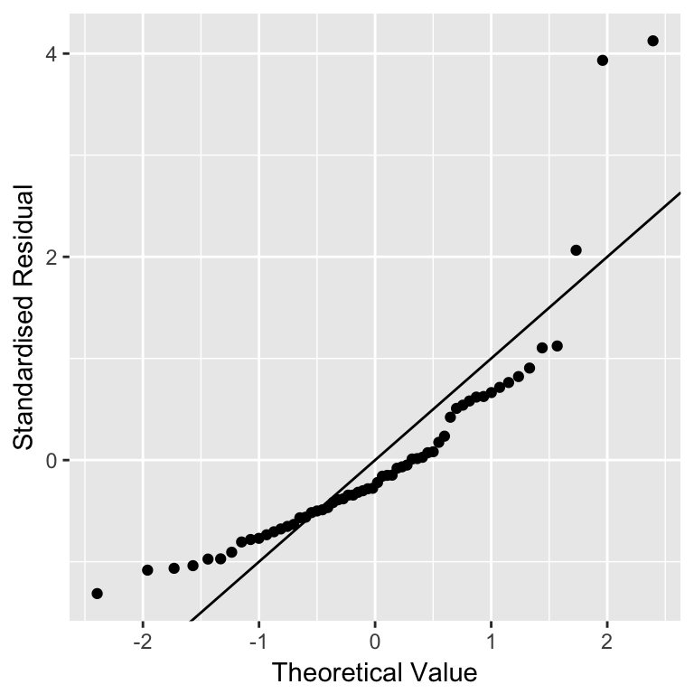
You should always use normal probability plots to assess normality assumptions in your own analyses. They work with every kind of model fitted the lm function deals with. What is more, they also work reasonably well when we only have a few residuals to play with. Seven is probably the lowest number we might accept—with fewer points it becomes hard to distinguish between random noise and a real deviation from normality.
That’s enough discussion of normal probability plot. Let’s move on to the constant variance evaluation…
22.2.6 Checking the constant variance assumption
How do we evaluate the constant variance assumption of a linear regression? That is, how do we assess whether or not the variability of the residuals is constant or not? This assumption can be evaluated in a similar way to the linearity assumption, by producing something called a ‘scale-location plot’. We construct this by plotting residuals against the fitted values, but instead of plotting raw residuals, we transform them first using the following ‘recipe’:
Standardise the residuals by dividing them by their standard deviation. Remember, this ensures the new residuals have a standard deviation of 1.
Find the absolute value of the residuals produced in step 1. If they are negative, make them positive, otherwise, leave them alone.
Take the square root of the residuals produced in step 2.
These calculations are simple enough in R. We’ll demonstrate them using the partridge data set again:
# extract the residuals
sqrt_abs_resids <- resid(partridge_model)
# step 1. standardise them
sqrt_abs_resids <- sqrt_abs_resids / sd(sqrt_abs_resids)
# step 2. find their absolute value
sqrt_abs_resids <- abs(sqrt_abs_resids)
# step 3. square root these
sqrt_abs_resids <- sqrt(sqrt_abs_resids)Now we use the fitted function to extract the fitted values form the model and place these in a data frame with the transformed residuals:
plt_data <-
data.frame(Fitted = fitted(partridge_model), Resids = sqrt_abs_resids)We called the data frame plt_data. Once we have made this data frame, we use ggplot2 to plot the transformed residuals against the fitted values:
ggplot(plt_data, aes(x = Fitted, y = Resids)) +
geom_point() +
xlab("Fitted values") + ylab("Square root of absolute residuals")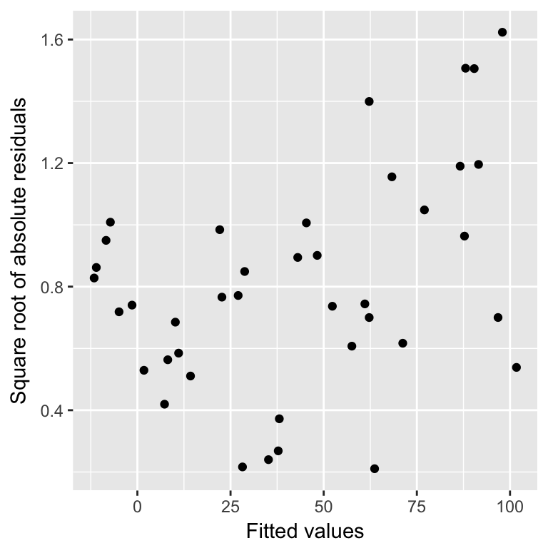 This is a scale-location plot. Why is this useful? We are looking to see if there is any kind of relationship between the transformed residuals and the fitted values, i.e., we want to assess whether or not the size of these new residuals increase or decrease as the fitted values get larger. If they do not—the relationship is essentially flat—then we can conclude that the variability in the residuals is constant. Otherwise, we have to conclude that the constant variance assumption is violated.
Although the pattern is not exactly clear cut, in this example there seems to be a bit of an upward trend with respect to the fitted values. This suggests that the variability (more formally, the ‘variance’) of the residuals increases with the fitted values. Larger partridge counts seem to be associated with more variability. This is a very common feature of count data.
Poor model fit complicates scale-location plots
It is worth reflecting on the ambiguity in this pattern. It is suggestive, but it certainly isn’t as clear as the U-shape in the residuals vs. fitted values plot used earlier. There is one potentially important reason for this ambiguity. The model we have used to describe the relationship between partridge counts and hedgerow density is not a very good model for these data. There is curvature in the relationship that we failed to take account of, and consequently, this lack of fit is impacting the scale-location plot. When a model does not fit the data well, the scale-location plot does not only describe the variability in the residuals. It also reflects the lack of fit. The take-home message is that it is a good idea to fix a lack of fit problem before trying to evaluate the constant variance assumption.
22.3 Regression diagnostics the easy way
It turns out that we did not have to do all that work to construct the three diagnistic plots. R has a built in facility to plot these. It works by using a function called plot with the fitted model object. For example, to produce a residuals vs fitted values plot, we use:
plot(partridge_model, which = 1)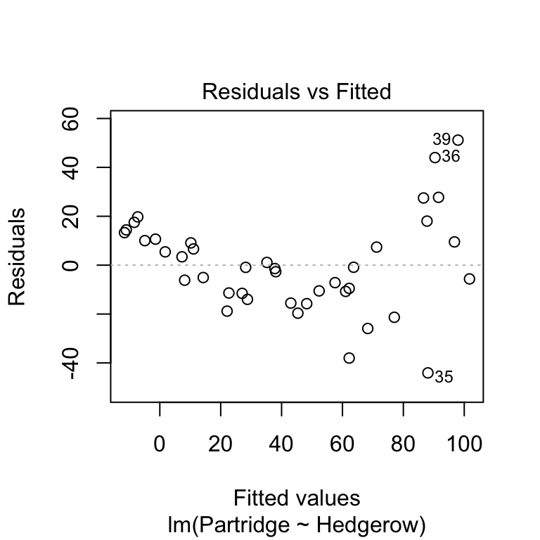 The first argument is the name of fitted model object. The second argument controls the output of the plot function: which = 1 argument tells it to produce a residuals vs. fitted values plot. That’s it.
Once again, there is no need to laboriously construct these plots. R has a built in facility to construct them from a fitted model object, accessed with the plot function :
plot(partridge_model, which = 2)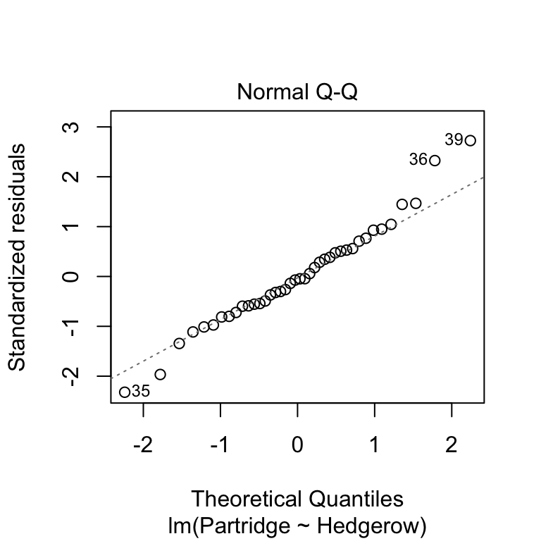 Again, the first argument must be the fitted model object, but this time the second argument needs to be which = 2. This produces essentially the same kind of plot we just made, with one small difference (apart from the different \(x\) axis label, which we can ignore). Rather than drawing a 1:1 line, the ‘plot’ function shows us a line of best fit. This just allows us to pick out the curvature a little more easily.
Once again, we do not have to manually construct this plot. We can produce a scale-location plot using the plot function by using the which = 3:
plot(partridge_model, which = 3)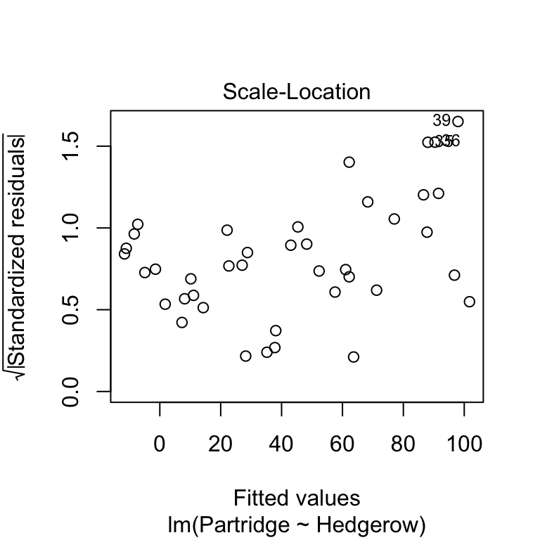
Non-constant variance can be a problem because it affects the validity of p-values associated with a model. You should aim to use scale-location plots to assess the constant variance assumption in your own analyses, but keep in mind that a scale-location plot may also reflect non-linearity.
22.4 Diagnostics for other kinds of models
We have focussed on simple linear regression in this session because regression diagnostics are most easily understood in the context of a regression model. However, the term ‘regression diagnostic’ is a bit of a misnomer. A more accurate term might be ‘linear model diagnostic’ but no one really uses this. Regression diagnostics can be used with many different kinds of models. In fact, the diagnostic plots we have introduced here can be applied to any model fitted by the lm function. This includes things like the ANOVA models we’ll study in later chapters.
Don’t panic if your dignostics aren’t perfect!
The good news about regression is that it is quite a robust technique. It will often give us reasonable answers even when the assumptions are not perfectly fulfilled. We should be aware of the assumptions but should not become too obsessed by them. If the violations are modest, it is often fine to proceed. We just need to interpret results with care. Of course, we have to know what constiutes a ‘modest’ violation. There are no hard and fast rules. The ability to make that judgement is something that comes with experience.
Even so-called ‘non-parametric’ models have underpinning assumptions; these are just not as restrictive as their parametric counterpart↩
This is the situatoin we face with multiple regression. A multiple regression is a type regression with more than one independent variable—we don’t study them in this course, but they are often used in biology↩